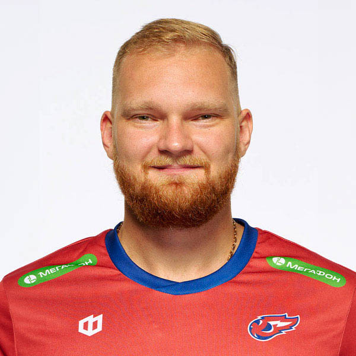
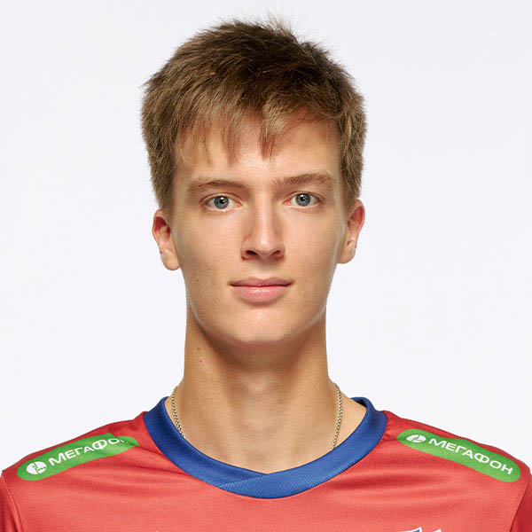

9.Блок питания — устройство, которое преобразует переменное напряжение сети в постоянное напряжение заданного уровня. Назначение Главное назначение блока питания — обеспечение питанием электронной аппаратуры. Также блоки питания выполняют другие функции, например: защищают компоненты устройств от перепадов напряжения и помех; регулируют энергопотребление, что позволяет оптимизировать использование электричества. Применение Блоки питания используются в различных сферах, например: Компьютерная техника — для подачи стабильного напряжения процессорам, памяти и другим компонентам. Мобильные устройства — для зарядки аккумуляторов смартфонов, планшетов. Промышленное оборудование — для питания автоматизированных линий производства, систем контроля и измерительных устройств. Медицинская техника — для электропитания аппаратов жизнеобеспечения и диагностики (например, МРТ или УЗИ). Автомобильная промышленность — для питания бортовых систем автомобилей. Принцип работы Работа большинства блоков питания включает несколько этапов: Трансформация сетевого напряжения переменного тока до необходимого значения с помощью трансформатора. Выпрямление полученного сигнала с помощью диодного моста или аналогичного элемента схемы. Фильтрация выпрямленного напряжения для устранения пульсаций и достижения устойчивого выходного напряжения. Регулировка и стабилизация напряжения для компенсации возможных колебаний нагрузки и изменений входного напряжения. В импульсных блоках питания процесс преобразования может включать также высокочастотное переключение, что позволяет повысить КПД и уменьшить размеры устройства. Типы блоков питания Существует два основных типа блоков питания: Линейные. Работают на основе классического трансформатора и стабилизаторов напряжения. Обеспечивают низкий уровень помех, но имеют низкую КПД и большие размеры. Импульсные. Преобразуют энергию с использованием высокочастотного переключения. Компактны, энергоэффективны, но требуют дополнительных фильтров для подавления высокочастотных помех.
| № | Фото игрока | Фамилия, имя |
|---|---|---|
| 1. | Дикарев Виталий | |
| 2. |  | Ковальчук Алексей |
| 3. |  | Квочко Андрей |
| 4. | Можжухин Клим Алексеевич | |
| 5. | Казбанов Егор | |
| 6. | Андреев Евгений | |
| 7. | Крот Никита |